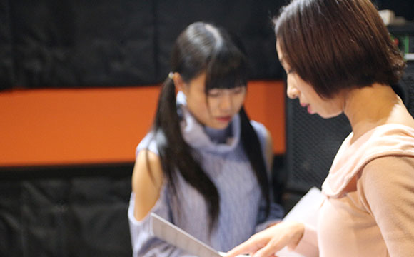
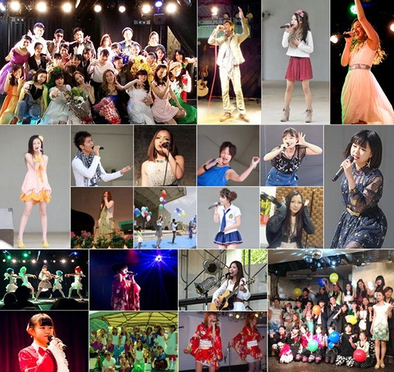

- TOP
- プロ養成コース
あなたも歌で輝く星になりたいなら～プロ養成コース～
福岡のボイストレーナー・沖島ゆき先生がマンツーマンレッスンを提供する「Vocal school Pure breed（ピュア ブリード）」では、プロの歌手や俳優（女優）や声優を目指す方を対象とした、プロ養成コースをご用意しています。
歌うことを仕事にしたい！プロデビューしたい！歌手や俳優（女優）になりたい！声優になりたい！という夢をお持ちでしたら、ぜひ当スクールのプロ養成コースをご検討ください。
プロ養成コースに興味があっても、いきなり飛び込むことを不安に感じるのなら、まずは一度、沖島ゆき先生のレッスンを体験してみてください。
「プロ養成コース」について
- 歌手・ボーカリストになりたい！
- アイドルになりたい！
- 歌に振り付けをつけてほしい！
- 自分の歌声を極めてみたい！
- 歌で自分を表現できるようになりたい！
- オーディション対策もしっかり行ってくれる先生が良い！
- 俳優（女優）・声優を目指していて、歌うシチュエーションにも対応できるようになりたい！
ご自身でも気づいていないポテンシャルを、沖島ゆき先生（P12へリンク）が引き出し、磨き上げ、しっかりと寄り添ってサポートいたします。
プロを目指すからには、プロのレッスンで徹底的に！
当スクールでは、一線を画するプロとして求められる内容を、レッスンでしっかりとレクチャー。
更に、受講生の個性や長所を伸ばしたり、時代に求められているものを敏感にキャッチし、レクチャーしたりと、さまざまな角度から あなたの夢を実現できるよう、お手伝いさせていただきます。

基礎トレーニングで身につける内容
姿勢、腹式呼吸、リズムトレーニング、喉（声帯・共鳴腔）の使い方、発声の基礎トレーニング、音感トレーニング、裏声（ファルセット）、ミックスボイスの出し方、発音・滑舌のトレーニング
プロとして最低限、身につけておきたい内容
信念、歌唱力、挨拶などのマナー、MC、ステージング、ウォーキング、ポージング、ボディメイク、メンタルケア
プロ養成コース独自の指導
ステージング、MC、ポートレート撮影、イベント出演、オーディションへの斡旋・アドバイス
プロ養成コースを志望する方へ～沖島ゆきからのメッセージ
レッスンで、あなたが一番はじめに変化を実感できるのが「声量」。無理に大きな声を出そうとすると、「のど」を痛めてしまいます。そのため私のレッスンでは、「のど」の位置を自覚し、「のど」の筋肉を効率よく動かし鍛えるトレーニングからスタートします。自然とのどを膨らませることができるようになると、無理をしたり力んだりすることなく、驚きの声量を出せるようになります。さらに継続することで、響きのある声、声域の広がり、声の安定も身につけられるようになるのです。
私のレッスンでは、豊富な経験と正しい知識に基づいたトレーニングを行います。レッスン中は、咳払いなどを通じて「のど」の筋肉を徐々に動かし、身体に覚えさせ、正しい「のど」の位置から発声（声の響き）を一緒に確認していきます。また、「のど」をコントロールすることができ
このようにPure breed（ピュア ブリード）では、「のど」の筋肉を鍛えることを通じて、あなたの声の魅力を最大限に引き出していきます。闇雲に歌うのではなく、理論に基づいてしっかり歌うことが身につけば、自分の思い通りに歌が歌えるようになります。プロを目指す方で、声の出し方や声量、音程や安定感、声域にお悩みでしたらぜひ私のボイストレーニングを受けてみてください。きっと、その違いを実感していただけると思います。
PICK UP!Pure breed（ピュア ブリード）からプロデビューへの道
ボイストレーナー・沖島ゆき先生の活動実績や独自のコネクションを伝って、福岡のボーカルスクール「Pure breed（ピュア ブリード）」では、国内・海外のプロダクションから「即戦力として見込みのある生徒さんはいらっしゃいますか？」という御相談や、テレビ局からの番組出演の御依頼を多数受けてきた実績がございます。
ですが、当スクールに在籍していれば誰でも「プロデビューできる」「番組に出演できる」というわけではありません。
まずは、沖島ゆき先生が自信をもって斡旋できるだけの魅力を持っていなければ御紹介することはあり得ません。
それは沖島ゆき先生が信頼関係をとても大切にされているからです。
プロとしてやっていけるだけの魅力の下積みをしっかり行い、沖島ゆき先生の信頼を得て、始めて実現可能となってきます。
当スクールでのレッスンでは、それらをしっかり身につけていける指導を、具体的かつ的確に行ってまいります。
プロ養成コースギャラリー
-
